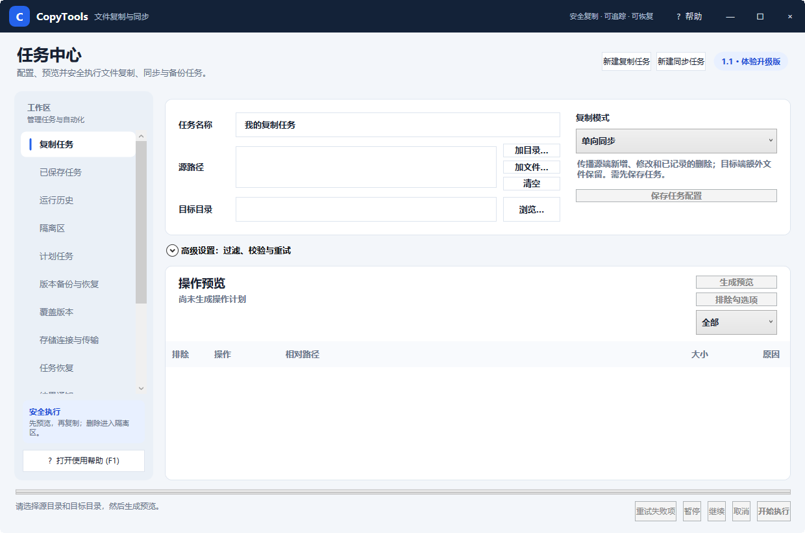

CopyTools 是面向 Windows 10/11 x64 的文件复制、目录同步、版本备份和自动执行工具。所有会写入目标目录的任务均可先生成预览，删除操作默认进入隔离区。

图 1：一体化标题栏、左侧工作区导航与复制任务编辑区
| 区域 | 用途 |
|---|---|
| 一体化标题栏 | 显示产品名称、安全理念、帮助入口以及最小化、最大化和关闭按钮。按 F1 可随时打开本帮助。 |
| 左侧工作区 | 切换复制任务、已保存任务、运行历史、隔离区、自动化、备份、远程存储、插件和设置等功能。 |
| 任务编辑区 | 配置源路径、目标目录、复制模式、过滤规则、校验方式、重试和性能选项。 |
| 操作预览 | 列出将执行的复制、更新、移动、删除和冲突处理动作；可排除单项后再运行。 |
| 底部执行栏 | 显示进度和当前状态，并提供重试失败项、暂停、继续、取消与开始执行。 |